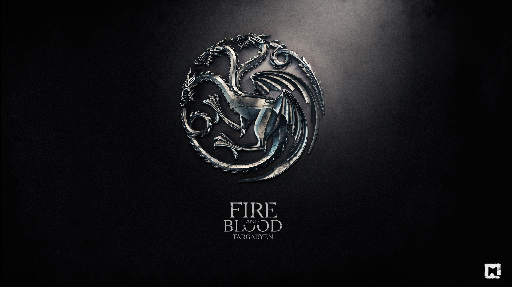

Таргариены
Таргариены (ориг. House Targaryen) — официально вымерший великий дом Вестероса, бывшая королевская династия. После поражения в восстании Роберта Баратеона два последних представителя династии, Визерис и Дейнерис, бежали из Вестероса в Эссос. Девизом дома является фраза «Пламя и кровь», а символом — красный трёхглавый дракон на чёрном фоне.
История
До событий сериала
Таргариены были одним из благородных домов Валирийского Фригольда, могущественной империи Эссоса, и носили титул драконьих лордов. Согласно легенде, дочери Эйнара Таргариена Дейнис приснилась гибель Валирии, и она убедила своего отца покинуть родину. Таргариены перебрались из Эссоса на остров в Узком море и построили на нём замок Драконий Камень. Спустя 12 лет пророчество Дейнис сбылось: Фригольд был полностью разрушен в результате мощного извержения вулканов. После этой катастрофы Таргариены оказались единственными владельцами драконов.
После гибели валирийской империи Таргариены вторглись в Вестерос, имея небольшую армию и трёх драконов. За довольно короткий период они завоевали шесть королевств, существовавших в ту пору на континенте, и основали династию королей андалов и первых людей. Через два века к ним присоединилось королевство Дорн, что в итоге привело к формированию государства, известного как Семь королевств.
Спустя двести восемьдесят лет началось сумасбродное правление Эйриса II Таргариена, который настроил против себя большинство регионов, в результате чего началась гражданская война, которая получила название Восстание Роберта. Таргариены проиграли её и почти все были уничтожены. Спастись удалось только двум младшим детям Эйриса, Визерису и Дейнерис, которые укрылись в Вольных городах. Также остался в живых дядя Эйриса Эймон Таргариен, который к тому времени уже давно служил в Ночном дозоре./p>
Практически у всех Таргариенов во внешности есть общие черты, например, серебряные волосы с золотым отливом.
Известные представители
- Король Эйрис II Таргариен, также известен как «Безумный Король», сын короля Эйгона V. Шестнадцатый Король Андалов и Первых Людей, Лорд Семи Королевств и Защитник Государства. Был убит в ходе восстание Роберта сиром Джейме Ланнистером в 281 году от З.Э.
- Королева Рейла Таргариен, сестра-жена короля Эйриса II, дочь короля Эйгона V, мать Рейгара, Визериса и Дейнерис. Умерла на Драконьем Камне во время родов своей дочери в 282 году от З.Э.
- Принц Рейгар Таргариен, старший сын короля Эйриса II и королевы Рейлы. Был убит Робертом Баратеоном в битве на Трезубце в 281 году от З.Э.
- Принцесса Элия Мартелл, первая жена принца Рейгара. Была убита сиром Григором Клиганом в ходе разгрома Королевской Гавани в 281 году от З.Э.
- Принцесса Рейнис Таргариен, дочь принца Рейгара и принцессы Элии. Была убита сиром Григором Клиганом в ходе разгрома Королевской Гавани в 281 году от З.Э.
- Принц Эйгон Таргариен, сын принц Рейгара и принцессы Элии. Был убит сиром Григором Клиганом в ходе разгрома Королевской Гавани в 281 году от З.Э.
- Принцесса Лианна Старк, вторая (тайная) жена принца Рейгара. Умерла в Башне Радости во время родов своего сына в 281 году от З.Э.
- Джон Сноу, по прозвищу «Белый Волк» (Эйгон Таргариен), сын принца Рейгара и принцессы Лианны. Бывший Хранитель Севера, Верховный лорд Севера, Лорд Винтерфелла, Король Севера и 998-й Лорд-командующий Ночного дозора. Его происхождение тщательно скрывалось его дядей лордом Эддардом Старком, дабы защитить Джона от гнева короля Роберта Баратеона, который хотел истребить всех Таргариенов. Эддард выдал Джона за своего бастарда. Лишь спустя 25 лет правда о Джоне вывелась в свет. Убил свою родную тётю и был лишён всех титулов и отправлен в ссылку в Ночной дозор.
- Принц Визерис Таргариен, младший сын короля Эйриса II и королевы Рейлы. Бежал вместе со своей сестрой в изгнание в Эссос. Был убит кхалом Дрого, мужем Дейнерис в возрасте 22 лет в 298 году от З.Э.
- Королева Дейнерис Таргариен, дочь короля Эйриса II и королевы Рейлы, Королева Андалов, Ройнаров и Первых Людей, Защитница Семи Королевств, Матерь Драконов, Неопалимая, Разрушительница Цепей, Кхалиси Великого травяного моря. Убита своим племянником лордом Джоном Сноу в возрасте 24 лет в 305 году от З.Э.
- Мейстер Эймон Таргариен, мейстер Ночного дозора. Второй сын короля Мейкара I и королевы Дианны, дядя короля Эйриса II. Умер от старости в возрасте 104 лет в 302 году от З.Э.
Предки
- Дейнис Таргариен, также известная как «Дейнис Сновидица», дочь лорда Эйнара. Предвидела в пророческом сне гибель Валирии и за 12 лет до катастрофы заставила отца покинуть родину.
- Лорд Эйнар Таргариен, лорд Драконьего Камня, бывший драконий лорд Валирийского Фригольда. Отец Дейнис.
- Король Эйгон I Таргариен, также известный как «Эйгон Завоеватель», основатель королевской династии. Первый Король Андалов и Первых Людей, Лорд Семи Королевств и Защитник Государства. Отец двоих сыновей Эйниса и Мейгора. Умер от инсульта в 37 году от В.Э. в возрасте 64 лет.
- Королева Рейнис Таргариен, сестра-жена короля Эйгона I. Мать одного сына Эйниса. Погибла в ходе Дорнийской войны в 10 году от З.Э. в возрасте 36 лет.
- Королева Висенья Таргариен, сестра-жена короля Эйгона I. Мать одного сына Мейгора. Умерла от старости в возрасте 73 лет в 44 году от З.Э.
- Король Эйнис I Таргариен, сын короля Эйгона I королевы Рейнис. Второй Король Андалов и Первых Людей, Лорд Семи Королевств и Защитник Государства. Отец двоих сыновей Эйгона и Джейхейриса, и двоих дочерей Рейны и Алисанны.
- Принц Эйгон Таргариен, сын короля Эйниса I. Женился на своей сестре Рейне. Был убит собственным дядей королём Мейгором I Таргариеном.
- Принцесса Рейна Таргариен, дочь короля Эйниса I, вышла замуж за своего брата принца Эйгона, а после его смерти за своего дядю короля Мейгора I Таргариена.
- Король Мейгор I Таргариен, также известный как «Мейгор Жестокий», достроил Красный замок. Третий Король Андалов и Первых Людей, Лорд Семи Королевств и Защитник Государства. Был в браке сразу с несколькими женщинами, включая королев Серису и Алис, и на своей племяннице Рейне. Умер поранившись об Железный трон в 48 году от З.Э.
- Королева Сериса Хайтауэр, первая жена короля Мейгора I. По слухам, была убита своим же мужем.
- Королева Алис Харровей, вторая жена короля Мейгора I. Убита своим же мужем в 44 году от З.Э.
- Король Джейхейрис I Таргариен, также известный как «Джейхейрис Миротворец» и «Старый Король». Четвёртый Король Андалов и Первых Людей, Лорд Семи Королевств и Защитник Государства. Женился на своей сестре Алисанне. Его правление считается годами мира и процветания, также считается самым успешным королём на Железном троне. Умер от старости в возрасте 69 лет в 103 году от З.Э.
- Королева Алисанна Таргариен, дочь короля Эйниса I, вышла замуж за своего брата короля Джейхейриса I.
- Король Визерис I Таргариен, также известный как «Визерис Молодой Король», внук короля Джейхейриса I и королевы Алисанны. Пятый Король Андалов и Первых Людей, Лорд Семи Королевств и Защитник Государства. Умер поранившись об Железный трон и попавшей в рану инфекции в 129 году от З.Э.
- Королева Эймма Аррен, первая жена короля Визериса I, мать одной дочери Рейниры.
- Принцесса Рейнира Таргариен, дочь короля Визериса I и королевы Эйммы. Вышла замуж за сира Лейнора Велариона, а после его смерти за своего дядю принца Деймона Таргариена. В первом браке стала матерью троих сыновей Джекейриса Велариона, Люцериса Велариона и Джоффри Велариона, во втором браке стала матерью двоих сыновей Эйгона и Визериса. Была скормлена дракону Солнечному Огню, своим единокровным братом королём Эйгоном II в 130 году от З.Э.
- Принц Деймон Таргариен, младший брат короля Визериса I. Дядя и муж принцессы Рейниры. Был убит в Танце над Божьим Оком своим племянником принцем Эймондом Таргариеном в 130 году от З.Э.
- Королева Алисента Хайтауэр, вторая жена короля Визериса I, мать двоих сыновей Эйгона и Эймонда, и одной дочери Хелейны.
- Король Эйгон II Таргариен, старший сын короля Визериса I и королевы Алисенты. Шестой Король Андалов и Первых Людей, Лорд Семи Королевств и Защитник Государства. Женился на своей сестре Хелейне, отец двоих сыновей Джейхейриса и Мейлора, и одной дочери Джейхейры. Оспорил права на трон своей старшей единокровным сестры Рейниры. Из-за чего разразилась война названной Танцем драконов. Был отравлен своими же соратниками в 131 году от З.Э.
- Королева Хелейна Таргариен, дочь короля Визериса I и королевы Алисанты. Вышла замуж за своего брата короля Эйгона II, мать двоих сыновей Джейхейриса и Мейлора, и одной дочери Джейхейры. Покончила жизнь самоубийством после Танца Драконов в 130 году от З.Э.
- Принц Джейхейрис Таргариен, старший сын короля Эйгона II и королевы Хелейны. Был убит наёмным убийцей по кличке Кровь в 129 году от З.Э.
- Принц Мейлор Таргариен, младший сын короля Эйгона II и королевы Хелейны. Был убит в ходе Танца Драконов в 130 году от З.Э.
- Принц Эймонд Таргариен, младший сын короля Визериса I и королевы Алисенты. Был убит в Танце над Божьим Оком своим дядей принцем Деймоном Таргариеном в 130 году от З.Э.
- Король Эйгон III Таргариен, также известный как «Эйгон Драконья Погибель», сын принцессы Рейниры и принца Деймона. Седьмой Король Андалов и Первых Людей, Лорд Семи Королевств и Защитник Государства. Отец двоих сыновей Дейрона и Бейлора, и троих дочерей Дейны, Рейны и Элейны.
- Королева Джейхейра Таргариен, дочь короля Эйгона II и королевы Хелейны, вышла замуж за своего кузена короля Эйгона III.
- Король Дейрон I Таргариен, также известный как «Дейрон Молодой Дракон», старший сын короля Эйгона III. Восьмой Король Андалов и Первых Людей, Лорд Семи Королевств и Защитник Государства. Был убит в ходе Завоевания Дорна в 161 году от З.Э. в возрасте 18 лет.
- Король Бейлор I Таргариен, также известный как «Бейлор Благословенный», младший сын короля Эйгона III, при нём была построена Великая септа. Девятый Король Андалов и Первых Людей, Лорд Семи Королевств и Защитник Государства. Женился на своей сестре Дейне, но брак консуммирован не был. Умер уморив сам себя голодом.
- Принцесса Дейна Таргариен, также известная как «Дейна Непокорная», старшая дочь короля Эйгона III. Вышла замуж за своего брата короля Бейлора I. Имела бастарда от своего кузена Эйгона IV по имени Деймон Блэкфайр.
- Принцесса Рейна Таргариен, вторая дочь короля Эйгона III.
- Принцесса Элейна Таргариен, третья и самая младшая дочь короля Эйгона III.
- Король Визерис II Таргариен, младший сын принцессы Рейниры и принца Деймона. Десятый Король Андалов и Первых Людей, Лорд Семи Королевств и Защитник Государства. Отец двоих сыновей Эйгона и Эймона, и одной дочери Нейрис.
- Король Эйгон IV Таргариен, также известный как «Эйгон Недостойный», старший сын короля Визериса II. Одиннадцатый Король Андалов и Первых Людей, Лорд Семи Королевств и Защитник Государстава. Женился на своей сестре Нейрис, отец одного законного сына Дейрона, и одной законной дочери Дейнерис, отец множества бастардов, включая и четверых Великих Бастардов: Деймона, Эйгора, Бриндена и Ширы. Умер от сахарного диабета.
- Сир Эймон Таргариен, также известный как «Эймон Рыцарь-Дракон», младший сын короля Визериса II. Лорд-командующий Королевской гвардии при своём брате Эйгоне Недостойном. Умер в возрасте 42 лет в 178 году от З.Э. при защите своего брата Эйгона IV от убийц.
- Королева Нейрис Таргариен, дочь короля Визериса II, сестра-жена Эйгона IV, мать одного сына Дейрона, и одной дочери Дейнерис.
- Король Дейрон II Таргариен, также известный как «Дейрон Добрый», сын короля Эйгона IV и королевы Нейрис. Присоединил Дорн к своему королевству через брак с Мартеллами. Двенадцатый Король Андалов и Первых Людей, Лорд Семи Королевств и Защитник Государства. Женился на принцессе Мирии Мартелл, отец четверых сыновей Бейлора, Эйриса, Рейгеля и Мейкара, и одной дочери Эйлинор. Умер во время эпидемии Великое весеннее поветрие в 209 году от З.Э. в возрасте 50 лет.
- Принцесса Дейнерис Таргариен, дочь короля Эйгона IV и королевы Нейрис, вышла замуж за принца Марона Мартелла. Умерла в возрасте 20 лет во время родов вместе с ребёнком в 202 году от З.Э.
- Королева Мирия Мартелл, жена короля Дейрона II. Бывшая принцесса Дорна. Мать четверых сыновей Бейлора, Эйриса, Рейгеля и Мейкара, и одной дочери Эйлинор.
- Принц Бейлор Таргариен, также известный как «Бейлор Сломи Копьё», старший сын короля Дейрона II и королевы Мирии. Был случайно убит своим братом на Мейкаром на Суде Семерых в 208 году от З.Э.
- Король Эйрис I Таргариен, также известный как «Эйрис Книжник», второй сын короля Дейрона II и королевы Мирии. Тринадцатый Король Андалов и Первых Людей, Лорд Семи Королевств и Защитник Государстава. Женился на своей сестре Эйлинор.
- Королева Эйлинор Таргариен, дочь короля Дейрона II и королевы Мирии, вышла замуж за своего брата короля Эйриса I, но брак консуммирован не был.
- Принц Рейгел Таргариен, третий сын короля Дейрона II и королевы Мирии. Умер на пиру подавившись пирогом.
- Король Мейкар I Таргариен, четвёртый и самый младший сын короля Дейрона II и королевы Мирии. Четырнадцатый Король Андалов и Первых Людей, Лорд Семи Королевств и Защитник Государства. Женился на леди Дианне Дейн, отец троих сыновей Эйриона, Эймона и Эйгона.
- Королева Дианна Дейн, жена короля Мейкара I, мать троих сыновей Эйриона, Эймона и Эйгона.
- Принц Эйрион Таргариен, также известный как «Эйрион Яркое Пламя», старший сын короля Мейкара I и королевы Дианны. Умер выпив дикий огонь.
- Король Эйгон V Таргариен, также известный как «Эйгон Невероятный», третий и самый младший сын короля Мейкара I и королевы Дианны. Пятнадцатый Король Андалов и Первых Людей, Лорд Семи Королевств и Защитник Государства. Отец троих сыновей Дункана, Эйриса и Дейрона, и двоих дочерей Рейлы и Рейль. Погиб при пожаре в Летнем замке в 259 году от З.Э.
- Принц Дункан Таргариен, первый и самый старший сын короля Эйгона V. Женился на простолюдинке Дженни из Старых Камней, из-за чего был вынужден отречься от наследования короны. Погиб вместе с отцом при пожаре в Летнем замке в 259 году от З.Э.
- Принц Дейрон Таргариен, третий и самый младший сын короля Эйгона V.
- Принцесса Рейль Таргариен, дочь короля Эйгона V, вышла замуж за лорда Ормунда Баратеона.
Военные силы
В Эссосе
В армию Дейнерис Таргариен входят несколько групп воинов. После смерти её мужа с ней осталась часть дотракийцев, несколько дюжин конных воинов. Также у неё есть три дракона, которые постепенно растут и уже представляют собой огромную опасность для окружающих.
После разгрома Астапора у Дейнерис появилось 8000 воинов, которых называют Безупречными. Это элитные воины-евнухи, очень дисциплинированные. Помимо них есть также несколько сотен молодых людей, которые пока ещё не завершили своё обучение.
После событий в Юнкае к Дейнерис присоединилось 2000 Младших сыновей, и у королевы наконец-то появились конные воины, так как до этого большую часть её армии составляла пехота. После обороны Миэрина появился долгожданный флот из 100 кораблей Грейджоев и некоторого количества захваченных у работорговцев. Но всё же осадных орудий по прежнему нет, не считая установленных на корабли работорговцев орудий для обстрела прибрежных городов.
В Вестеросе
Официально в Вестеросе не осталось вассалов и союзников Таргариенов. Предполагается, что Варис — тайный верноподданный Таргариенов, но даже если так, у него нет армии. Также существует мнение, что на этом континенте сохранилось несколько благородных домов, которые либо являются тайными верноподданными Таргариенов, либо примут их сторону в том случае, если Таргариены начнут войну за Железный трон.
Визерис Таргариен верил, что Мартеллы и Тиреллы примут их сторону, так как они поддерживали его отца во время восстания Роберта. Но никаких доказательств этим слухам нет. Однако всё же три великих дома Вестероса приняли сторону Таргариенов: Тиреллы, Мартеллы и Грейджои. Вместе с ними Дейнерис получила мощный флот Грейджоев и многочисленные войска и корабли Простора и Дорна. После Битвы Железных флотов и Падения Хайгардена Дейнерис потеряла войско Тиреллов и дорнийцев, а также флот Яры Грейджой.
Вскоре весь Железный флот был уничтожен королём Эуроном Грейджоем, 97 кораблей. За ними последовали армии Тиреллов и Мартеллов. Эурон уничтожает ещё один флот Дейнерис у Утёса Кастерли численностью 80 кораблей. Однако вскоре на верность королевы Дейнери присягает весь Север и Долина Аррен. В ходе Великой битвы за Винтерфелл, армия Дейнерис теряет половину всех своих сил. А на Драконьем Камне Эурон устраивает засаду и убивает одного из драконов Дейнерис Рейгаля и уничтожает остатки флота Дейнерис, около 30 кораблей. Со смертью Дейнерис все присягнувшие на верность дому Таргариенов войска освобождаются от своих клятв и распущены.